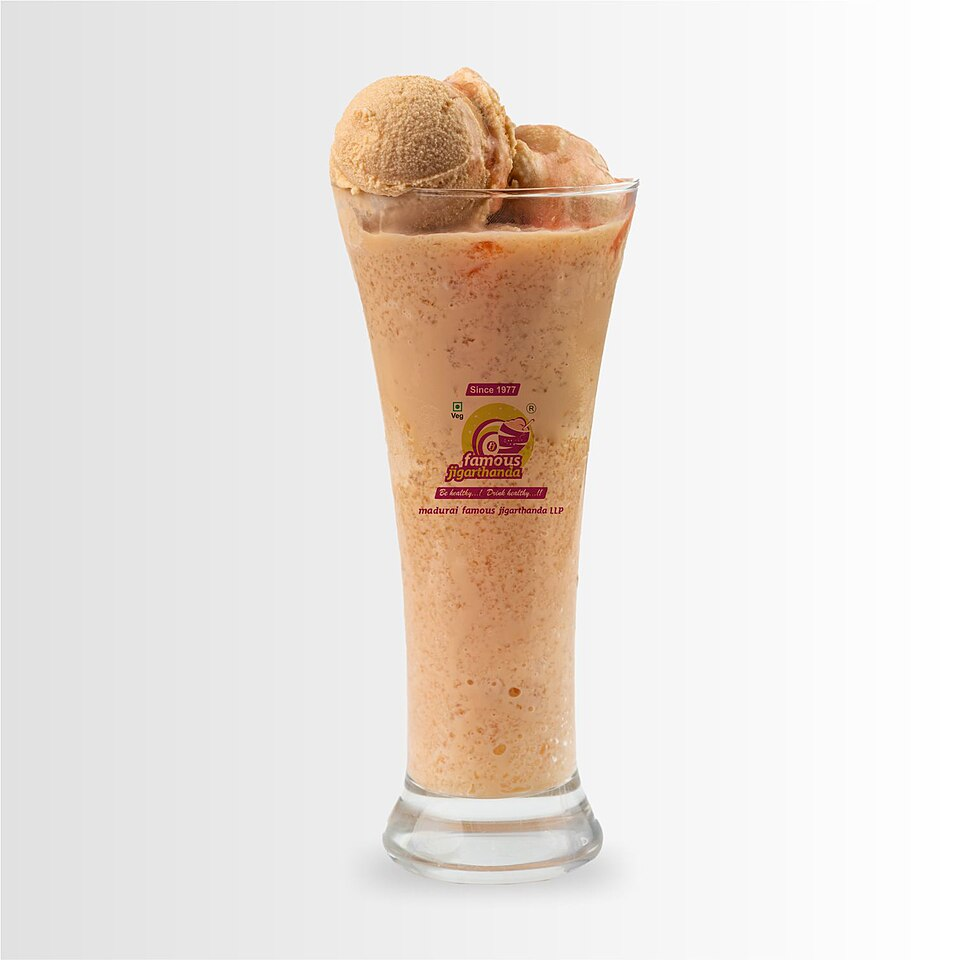
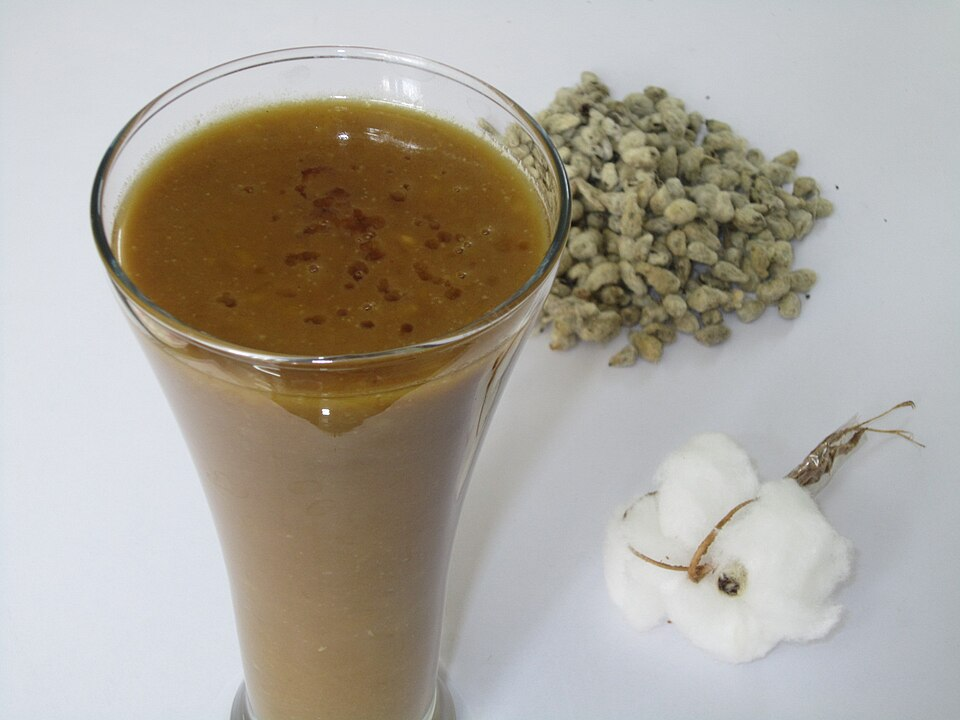
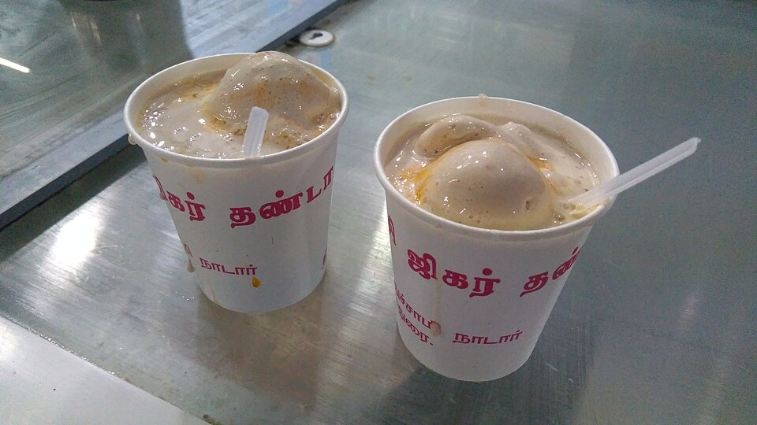

TASTE OF THE TEMPLE CITY • TAMIL NADU TOURISM & INCREDIBLE INDIA HIGHLIGHT
Madurai's food culture is one of its strongest tourist attractions. Tamil Nadu Tourism specifically highlights Jigarthanda, parotta, spicy curries, and traditional street food, while Incredible India highlights Kari Dosai, Paruthipal, Kothu Parotta, Jigarthanda, and Appam. Explore all fourteen must-try culinary icons below.
MADURAI'S SIGNATURE CHILLED ICON
Jigarthanda is one of the foods most strongly associated with Madurai, specifically celebrated by Tamil Nadu Tourism and Incredible India as the city's cooling nectar.
There are multiple independent Jigarthanda shops and brand kiosks operating across Madurai (including Famous Jigarthanda on East Marret Street and Raja Jigarthanda in Simmakkal). If a celebrity or visitor is reported as visiting "a Jigarthanda shop", do not automatically identify it as a particular Famous Jigarthanda branch unless the reliable source explicitly names that exact shop.

SIGNATURE SWEET📍 Central Madurai / East Marret Street
Hand-reduced full-cream milk simmered for hours into golden basundi, chilled almond gum (badam pisin), botanical nannari syrup, and crowned with hand-churned vanilla scoop.
View dish details →
TRADITIONAL TONIC📍 Simmakkal & West Masi Street
A cherished ancient Tamil street health drink made using pure cottonseed extract, raw unrefined cane jaggery, crushed dry ginger (sukku), and aromatic cardamom.
View dish details →
CHILLED REFRESHMENT📍 Vilakkuthoon & Town Hall Road
A popular sweet chilled drink served across street kiosks and bakeries, blending rich cold milk with fragrant rose essence and shaved ice to beat the southern heat.
View dish details →